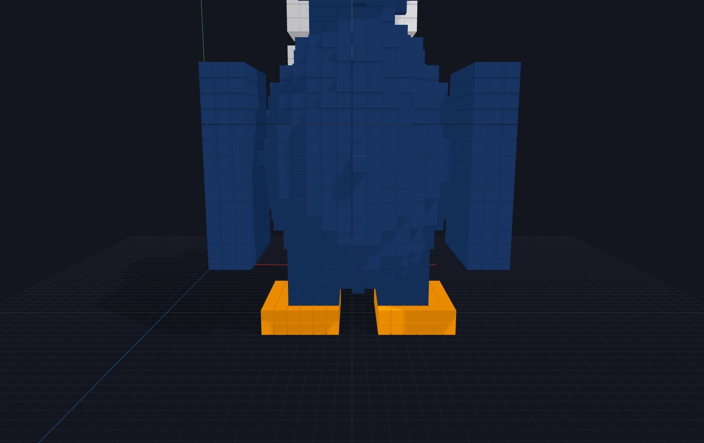
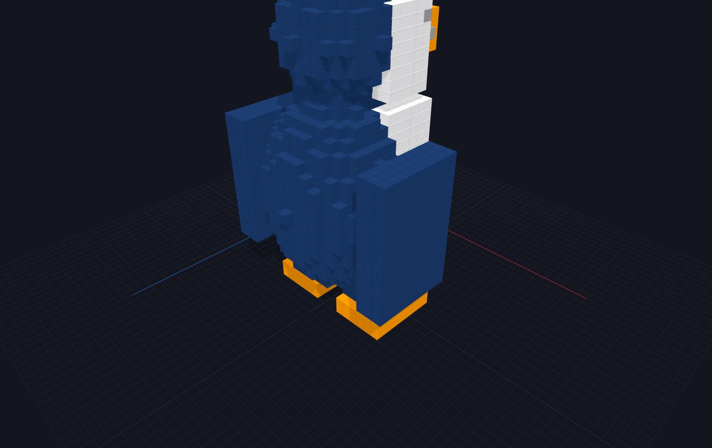

Appendix: Full-Resolution Mind's Eye Depth Maps
Voxel Penguin Model (32×32×32) — 6 Orthographic Views
Left: 3D WebGL render (for human reference). Right: text-based depth map (what the LLM reads).
No vision model is used. The LLM receives only the text.
Depth encoding:
. = empty (ray missed)
0 = closest to camera
1-8 = progressively deeper
9 = farthest from camera
FRONT View

FRONT (→X, ↑Y) [x:0-32 y:0-32]
1 1 1 1 1 1 1 1 1 1 2 2 2 2 2 2 2 2 2 2 3 3
0 1 2 3 4 5 6 7 8 9 0 1 2 3 4 5 6 7 8 9 0 1 2 3 4 5 6 7 8 9 0 1
0 . . . . . . . . . . . . 5 5 4 4 4 4 4 5 5 . . . . . . . . . . .
1 . . . . . . . . . . . 3 3 3 3 3 3 3 3 3 3 . . . . . . . . . . .
2 . . . . . . . . . . . 3 3 3 3 3 3 3 3 3 3 . . . . . . . . . . .
3 . . . . . . . . . . . 3 3 3 2 2 2 2 3 3 3 5 . . . . . . . . . .
4 . . . . . . . . . . . 3 3 3 2 2 2 2 3 3 3 . . . . . . . . . . .
5 . . . . . . . . . . . 3 3 3 2 2 2 2 3 3 3 . . . . . . . . . . .
6 . . . . . . . . . . . 3 3 3 2 2 2 2 3 3 3 . . . . . . . . . . .
7 . . . . . . . . . . . 3 3 3 3 2 2 3 3 3 3 . . . . . . . . . . .
8 . . . . . . . . . . . 3 3 3 3 2 2 3 3 3 3 . . . . . . . . . . .
9 . . . . . . . . . . . . . 4 4 4 4 4 4 6 . . . . . . . . . . . .
10 . . . . . . . . . . . 3 3 3 3 3 3 3 3 3 3 . . . . . . . . . . .
11 . . . . . . . . . . . 3 3 3 3 3 3 3 3 3 3 . . . . . . . . . . .
12 . . . . . . 4 4 4 . . 3 3 3 3 3 3 3 3 3 3 5 . . 4 4 4 . . . . .
13 . . . . . . 4 4 4 . 6 3 3 3 3 3 3 3 3 3 3 5 6 . 4 4 4 . . . . .
14 . . . . . . 4 4 4 . 5 3 3 3 3 3 3 3 3 3 3 5 5 . 4 4 4 . . . . .
15 . . . . . . 4 4 4 . 5 3 3 3 3 3 3 3 3 3 3 5 5 . 4 4 4 . . . . .
16 . . . . . . 4 4 4 . 5 3 3 3 3 3 3 3 3 3 3 4 5 . 4 4 4 . . . . .
17 . . . . . . 4 4 4 . 5 3 3 3 3 3 3 3 3 3 3 4 5 . 4 4 4 . . . . .
18 . . . . . . 4 4 4 6 5 3 3 3 3 3 3 3 3 3 3 4 5 6 4 4 4 . . . . .
19 . . . . . . 4 4 4 . 5 3 3 3 3 3 3 3 3 3 3 4 5 . 4 4 4 . . . . .
20 . . . . . . 4 4 4 . 5 3 3 3 3 3 3 3 3 3 3 4 5 . 4 4 4 . . . . .
21 . . . . . . 4 4 4 . 5 3 3 3 3 3 3 3 3 3 3 5 5 . 4 4 4 . . . . .
22 . . . . . . 4 4 4 . 5 3 3 3 3 3 3 3 3 3 3 5 5 . 4 4 4 . . . . .
23 . . . . . . 4 4 4 . 6 3 3 3 3 3 3 3 3 3 3 5 6 . 4 4 4 . . . . .
24 . . . . . . 4 4 4 . . 3 3 3 3 3 3 3 3 3 3 5 . . 4 4 4 . . . . .
25 . . . . . . 4 4 4 . . 3 3 3 3 3 3 3 3 3 3 4 . . 4 4 4 . . . . .
26 . . . . . . . . . . . 3 3 3 3 3 3 3 3 3 3 4 . . . . . . . . . .
27 . . . . . . . . . . . 3 3 3 3 3 3 3 3 3 3 4 . . . . . . . . . .
28 . . . . . . . . . . . 4 4 4 4 . 6 . 4 4 4 4 . . . . . . . . . .
29 . . . . . . . . . . . 4 4 4 4 . . . 4 4 4 4 . . . . . . . . . .
30 . . . . . . . . . 4 4 4 4 4 4 . . . 4 4 4 4 4 4 . . . . . . . .
31 . . . . . . . . . 4 4 4 4 4 4 . . . 4 4 4 4 4 4 . . . . . . . .
RIGHT View

RIGHT (→Z, ↑Y) [z:0-32 y:0-32]
1 1 1 1 1 1 1 1 1 1 2 2 2 2 2 2 2 2 2 2 3 3
0 1 2 3 4 5 6 7 8 9 0 1 2 3 4 5 6 7 8 9 0 1 2 3 4 5 6 7 8 9 0 1
0 . . . . . . . . . . . . . . 4 4 3 3 3 3 3 4 4 . . . . . . . . .
1 . . . . . . . . . . . . 3 3 3 3 3 3 3 3 3 3 4 . . . . . . . . .
2 . . . . . . . . . . . . 3 3 3 3 3 3 3 3 3 3 4 . . . . . . . . .
3 . . . . . . . 4 4 4 4 3 3 3 3 3 3 3 3 3 3 3 3 4 . . . . . . . .
4 . . . . . . . 4 4 4 3 3 3 3 3 3 3 3 3 3 3 3 4 . . . . . . . . .
5 . . . . . . . 4 4 4 4 4 3 3 3 3 3 3 3 3 3 3 4 . . . . . . . . .
6 . . . . . . . 4 4 4 4 4 3 3 3 3 3 3 3 3 3 4 4 . . . . . . . . .
7 . . . . . . . 4 4 4 4 4 3 3 3 3 3 4 3 4 4 4 . . . . . . . . . .
8 . . . . . . . 4 4 4 4 4 3 3 3 3 3 4 4 4 4 . . . . . . . . . . .
9 . . . . . . . . . . . . . . 4 4 4 4 4 3 4 4 . . . . . . . . . .
10 . . . . . . . . . . . 3 3 3 3 3 3 3 3 3 3 3 4 . . . . . . . . .
11 . . . . . . . . . . . 3 3 3 3 3 3 3 3 3 3 3 3 4 . . . . . . . .
12 . . . . . . . . . . . 3 3 3 3 1 1 1 1 1 1 1 1 1 . . . . . . . .
13 . . . . . . . . . . . 3 3 3 3 1 1 1 1 1 1 1 1 1 4 . . . . . . .
14 . . . . . . . . . . . 3 3 3 3 1 1 1 1 1 1 1 1 1 4 . . . . . . .
15 . . . . . . . . . . . 3 3 3 3 1 1 1 1 1 1 1 1 1 3 . . . . . . .
16 . . . . . . . . . . . 3 3 3 3 1 1 1 1 1 1 1 1 1 3 . . . . . . .
17 . . . . . . . . . . . 3 3 3 3 1 1 1 1 1 1 1 1 1 3 . . . . . . .
18 . . . . . . . . . . . 3 3 3 3 1 1 1 1 1 1 1 1 1 3 4 . . . . . .
19 . . . . . . . . . . . 3 3 3 3 1 1 1 1 1 1 1 1 1 3 . . . . . . .
20 . . . . . . . . . . . 3 3 3 3 1 1 1 1 1 1 1 1 1 3 . . . . . . .
21 . . . . . . . . . . . 3 3 3 3 1 1 1 1 1 1 1 1 1 3 . . . . . . .
22 . . . . . . . . . . . 3 3 3 3 1 1 1 1 1 1 1 1 1 4 . . . . . . .
23 . . . . . . . . . . . 3 3 3 3 1 1 1 1 1 1 1 1 1 4 . . . . . . .
24 . . . . . . . . . . . 3 3 3 3 1 1 1 1 1 1 1 1 1 . . . . . . . .
25 . . . . . . . . . . . 3 3 3 3 1 1 1 1 1 1 1 1 1 . . . . . . . .
26 . . . . . . . . . . . 3 3 3 3 3 3 3 3 3 3 3 4 . . . . . . . . .
27 . . . . . . . . . . . 3 3 3 3 3 3 3 3 3 4 4 . . . . . . . . . .
28 . . . . . . . . . . . . . . . 3 3 3 3 3 . . . . . . . . . . . .
29 . . . . . . . . . . . . . . . 3 3 3 3 3 . . . . . . . . . . . .
30 . . . . . . . . . . . . . 2 2 2 2 2 2 2 2 . . . . . . . . . . .
31 . . . . . . . . . . . . . 2 2 2 2 2 2 2 2 . . . . . . . . . . .
BACK View

BACK (→X, ↑Y) [x:0-32 y:0-32]
1 1 1 1 1 1 1 1 1 1 2 2 2 2 2 2 2 2 2 2 3 3
0 1 2 3 4 5 6 7 8 9 0 1 2 3 4 5 6 7 8 9 0 1 2 3 4 5 6 7 8 9 0 1
0 . . . . . . . . . . . 4 3 3 3 3 3 3 3 4 . . . . . . . . . . . .
1 . . . . . . . . . . . 3 3 3 3 3 3 3 3 3 4 . . . . . . . . . . .
2 . . . . . . . . . . . 3 3 3 3 3 3 3 3 3 4 . . . . . . . . . . .
3 . . . . . . . . . . 4 3 3 3 3 2 3 3 3 3 4 . . . . . . . . . . .
4 . . . . . . . . . . . 3 3 3 3 3 3 3 3 3 4 . . . . . . . . . . .
5 . . . . . . . . . . . 3 3 3 3 3 3 3 3 3 4 . . . . . . . . . . .
6 . . . . . . . . . . . 4 3 3 3 3 3 3 3 4 4 . . . . . . . . . . .
7 . . . . . . . . . . . 4 4 3 3 3 3 3 3 4 4 . . . . . . . . . . .
8 . . . . . . . . . . . 4 4 3 3 3 3 3 3 4 4 . . . . . . . . . . .
9 . . . . . . . . . . . . 3 3 3 3 3 3 3 . . . . . . . . . . . . .
10 . . . . . . . . . . . 3 3 3 3 3 3 3 3 3 4 . . . . . . . . . . .
11 . . . . . . . . . . . 3 3 3 2 2 2 3 3 3 4 . . . . . . . . . . .
12 . . . . . 2 2 2 . . 3 3 2 2 2 2 2 2 2 3 3 . . 2 2 2 . . . . . .
13 . . . . . 2 2 2 . 3 3 3 2 2 2 2 2 2 2 3 3 3 . 2 2 2 . . . . . .
14 . . . . . 2 2 2 . 3 3 2 2 2 2 2 2 2 2 2 3 3 . 2 2 2 . . . . . .
15 . . . . . 2 2 2 . 3 3 2 2 2 2 2 2 2 2 2 3 3 . 2 2 2 . . . . . .
16 . . . . . 2 2 2 . 3 2 2 2 2 2 2 2 2 2 2 2 3 . 2 2 2 . . . . . .
17 . . . . . 2 2 2 . 3 2 2 2 2 2 2 2 2 2 2 2 3 . 2 2 2 . . . . . .
18 . . . . . 2 2 2 3 3 2 2 2 2 2 2 2 2 2 2 2 3 3 2 2 2 . . . . . .
19 . . . . . 2 2 2 . 3 2 2 2 2 2 2 2 2 2 2 2 3 . 2 2 2 . . . . . .
20 . . . . . 2 2 2 . 3 2 2 2 2 2 2 2 2 2 2 2 3 . 2 2 2 . . . . . .
21 . . . . . 2 2 2 . 3 3 2 2 2 2 2 2 2 2 2 3 3 . 2 2 2 . . . . . .
22 . . . . . 2 2 2 . 3 3 2 2 2 2 2 2 2 2 2 3 3 . 2 2 2 . . . . . .
23 . . . . . 2 2 2 . 3 3 3 2 2 2 2 2 2 2 3 3 3 . 2 2 2 . . . . . .
24 . . . . . 2 2 2 . . 3 3 2 2 2 2 2 2 2 3 3 . . 2 2 2 . . . . . .
25 . . . . . 2 2 2 . . 3 3 3 3 2 2 2 3 3 3 3 . . 2 2 2 . . . . . .
26 . . . . . . . . . . 3 3 3 3 3 3 3 3 3 3 3 . . . . . . . . . . .
27 . . . . . . . . . . 3 3 3 3 3 3 3 3 3 3 3 . . . . . . . . . . .
28 . . . . . . . . . . 3 3 3 3 . 3 . 3 3 3 3 . . . . . . . . . . .
29 . . . . . . . . . . 3 3 3 3 . . . 3 3 3 3 . . . . . . . . . . .
30 . . . . . . . . 3 3 3 3 3 3 . . . 3 3 3 3 3 3 . . . . . . . . .
31 . . . . . . . . 3 3 3 3 3 3 . . . 3 3 3 3 3 3 . . . . . . . . .
LEFT View

LEFT (→Z, ↑Y) [z:0-32 y:0-32]
1 1 1 1 1 1 1 1 1 1 2 2 2 2 2 2 2 2 2 2 3 3
0 1 2 3 4 5 6 7 8 9 0 1 2 3 4 5 6 7 8 9 0 1 2 3 4 5 6 7 8 9 0 1
0 . . . . . . . . . 5 4 4 4 3 4 4 4 5 . . . . . . . . . . . . . .
1 . . . . . . . . . 4 4 3 3 3 3 3 3 3 3 3 . . . . . . . . . . . .
2 . . . . . . . . . 4 4 3 3 3 3 3 3 3 3 3 . . . . . . . . . . . .
3 . . . . . . . . 5 4 3 3 3 3 3 3 3 3 3 3 4 4 4 4 4 . . . . . . .
4 . . . . . . . . . 4 4 3 3 3 3 3 3 3 3 3 4 4 4 4 4 . . . . . . .
5 . . . . . . . . . 4 4 3 3 3 3 3 3 3 3 3 4 4 4 4 4 . . . . . . .
6 . . . . . . . . . 5 4 4 4 3 4 3 3 3 3 3 4 4 4 4 4 . . . . . . .
7 . . . . . . . . . . 5 4 4 4 4 3 3 3 3 3 4 4 4 4 4 . . . . . . .
8 . . . . . . . . . . . 4 4 4 4 3 3 3 3 3 4 4 4 4 4 . . . . . . .
9 . . . . . . . . . . 4 4 4 4 4 4 4 4 . . . . . . . . . . . . . .
10 . . . . . . . . . 4 4 3 3 3 4 3 3 3 3 3 3 . . . . . . . . . . .
11 . . . . . . . . 4 4 3 3 3 3 3 3 3 3 3 3 3 . . . . . . . . . . .
12 . . . . . . . . 2 2 2 2 2 2 2 2 2 3 3 3 3 . . . . . . . . . . .
13 . . . . . . . 4 2 2 2 2 2 2 2 2 2 3 3 3 3 . . . . . . . . . . .
14 . . . . . . . 4 2 2 2 2 2 2 2 2 2 3 3 3 3 . . . . . . . . . . .
15 . . . . . . . 4 2 2 2 2 2 2 2 2 2 3 3 3 3 . . . . . . . . . . .
16 . . . . . . . 4 2 2 2 2 2 2 2 2 2 3 3 3 3 . . . . . . . . . . .
17 . . . . . . . 4 2 2 2 2 2 2 2 2 2 3 3 3 3 . . . . . . . . . . .
18 . . . . . . 5 4 2 2 2 2 2 2 2 2 2 3 3 3 3 . . . . . . . . . . .
19 . . . . . . . 4 2 2 2 2 2 2 2 2 2 3 3 3 3 . . . . . . . . . . .
20 . . . . . . . 4 2 2 2 2 2 2 2 2 2 3 3 3 3 . . . . . . . . . . .
21 . . . . . . . 4 2 2 2 2 2 2 2 2 2 3 3 3 3 . . . . . . . . . . .
22 . . . . . . . 4 2 2 2 2 2 2 2 2 2 3 3 3 3 . . . . . . . . . . .
23 . . . . . . . 4 2 2 2 2 2 2 2 2 2 3 3 3 3 . . . . . . . . . . .
24 . . . . . . . . 2 2 2 2 2 2 2 2 2 3 3 3 3 . . . . . . . . . . .
25 . . . . . . . . 2 2 2 2 2 2 2 2 2 3 3 3 3 . . . . . . . . . . .
26 . . . . . . . . . 4 4 3 3 3 3 3 3 3 3 3 3 . . . . . . . . . . .
27 . . . . . . . . . . 4 4 3 3 3 3 3 3 3 3 3 . . . . . . . . . . .
28 . . . . . . . . . . . . 3 3 3 3 3 . . . . . . . . . . . . . . .
29 . . . . . . . . . . . . 3 3 3 3 3 . . . . . . . . . . . . . . .
30 . . . . . . . . . . . 3 3 3 3 3 3 3 3 . . . . . . . . . . . . .
31 . . . . . . . . . . . 3 3 3 3 3 3 3 3 . . . . . . . . . . . . .
TOP View

TOP (→X, ↑Z) [x:0-32 z:0-32]
1 1 1 1 1 1 1 1 1 1 2 2 2 2 2 2 2 2 2 2 3 3
0 1 2 3 4 5 6 7 8 9 0 1 2 3 4 5 6 7 8 9 0 1 2 3 4 5 6 7 8 9 0 1
0 . . . . . . . . . . . . . . . . . . . . . . . . . . . . . . . .
1 . . . . . . . . . . . . . . . . . . . . . . . . . . . . . . . .
2 . . . . . . . . . . . . . . . . . . . . . . . . . . . . . . . .
3 . . . . . . . . . . . . . . . . . . . . . . . . . . . . . . . .
4 . . . . . . . . . . . . . . . . . . . . . . . . . . . . . . . .
5 . . . . . . . . . . . . . . . . . . . . . . . . . . . . . . . .
6 . . . . . . . . . . . . . . . . 5 . . . . . . . . . . . . . . .
7 . . . . . . . . . . . . . 4 4 4 4 4 4 4 . . . . . . . . . . . .
8 . . . . . . 3 3 3 . . 5 4 3 3 3 1 3 3 3 4 5 . . 3 3 3 . . . . .
9 . . . . . . 3 3 3 . 5 4 3 1 0 0 0 0 0 1 3 4 5 . 3 3 3 . . . . .
10 . . . . . . 3 3 3 . 4 3 1 0 0 0 0 0 0 0 1 3 4 . 3 3 3 . . . . .
11 . . . . . . 3 3 3 9 4 3 0 0 0 0 0 0 0 0 0 3 4 9 3 3 3 . . . . .
12 . . . . . . 3 3 3 5 4 3 0 0 0 0 0 0 0 0 0 3 4 5 3 3 3 . . . . .
13 . . . . . . 3 3 3 9 4 1 0 0 0 0 0 0 0 0 0 1 4 9 3 3 3 . . . . .
14 . . . . . . 3 3 3 9 4 3 0 0 0 0 0 0 0 0 0 3 4 9 3 3 3 . . . . .
15 . . . . . . 3 3 3 9 5 0 0 0 0 0 0 0 0 0 0 4 5 9 3 3 3 . . . . .
16 . . . . . . 3 3 3 9 9 0 0 0 0 0 0 0 0 0 0 5 9 9 3 3 3 . . . . .
17 . . . . . . . . . 9 9 0 0 0 0 0 0 0 0 0 0 9 9 9 . . . . . . . .
18 . . . . . . . . . 9 9 0 0 0 0 0 0 0 0 0 0 9 9 9 . . . . . . . .
19 . . . . . . . . . . . 0 0 0 0 0 0 0 0 0 0 . . . . . . . . . . .
20 . . . . . . . . . . . 3 3 1 1 1 1 1 3 1 3 . . . . . . . . . . .
21 . . . . . . . . . . . . . 1 1 1 1 1 . 1 . . . . . . . . . . . .
22 . . . . . . . . . . . . . . 1 1 1 1 . . . . . . . . . . . . . .
23 . . . . . . . . . . . . . . 1 1 1 1 . . . . . . . . . . . . . .
24 . . . . . . . . . . . . . . 1 1 1 1 . . . . . . . . . . . . . .
25 . . . . . . . . . . . . . . . . . . . . . . . . . . . . . . . .
26 . . . . . . . . . . . . . . . . . . . . . . . . . . . . . . . .
27 . . . . . . . . . . . . . . . . . . . . . . . . . . . . . . . .
28 . . . . . . . . . . . . . . . . . . . . . . . . . . . . . . . .
29 . . . . . . . . . . . . . . . . . . . . . . . . . . . . . . . .
30 . . . . . . . . . . . . . . . . . . . . . . . . . . . . . . . .
31 . . . . . . . . . . . . . . . . . . . . . . . . . . . . . . . .
ISOMETRIC View (bonus — 3D perspective for human reference)

The isometric view has no text-based equivalent —
it exists only for human visual reference.
The Mind's Eye system uses 5 axis-aligned
orthographic projections (shown above) because
they map cleanly to structured text grids.
This is a key design choice: orthographic views
produce uniform grids where every row has the
same width, making them readable by LLMs as
structured data. Perspective views would produce
irregular, non-rectangular output.